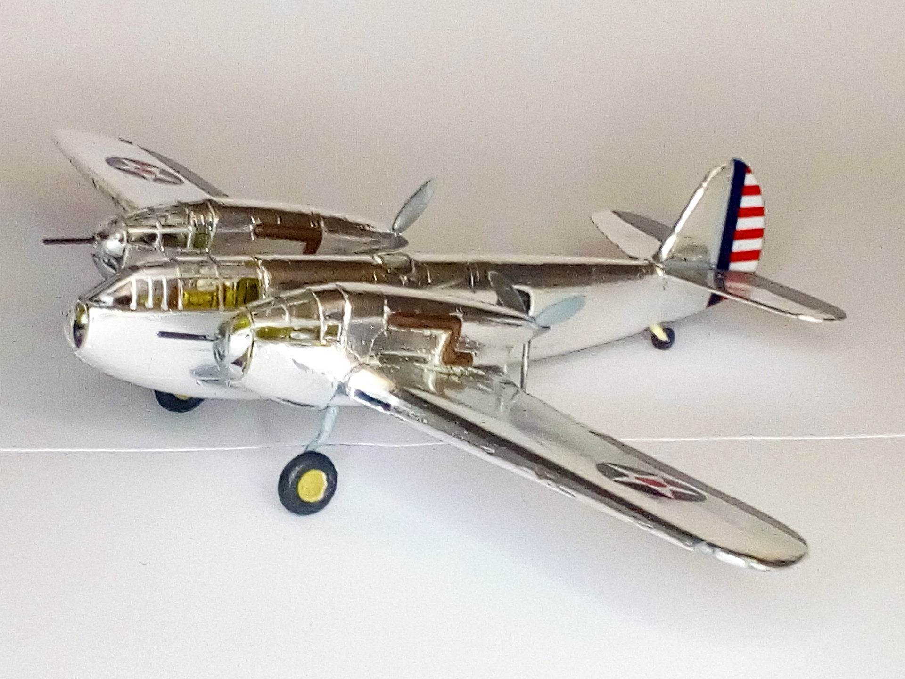

Aerei · scale model archive
Bell YFM-1B Airacuda
Bell YFM-1B Airacuda — Kit: Valom, Scale: 1/72. Prototype of heavy fighter, September 1937 quite a novel shape, alu finish in all its glory #1/72 #Valom

Photo gallery
English description
Prototype of heavy fighter, September 1937 quite a novel shape, alu finish in all its glory
#1/72 #Valom
Descrizione italiana
Prototipo di heavy figther, settembre 1937 piuttosto una novel forma, alu finitura in tutto il suo splendore.